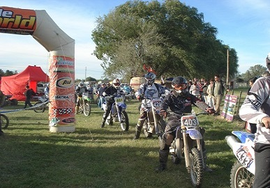
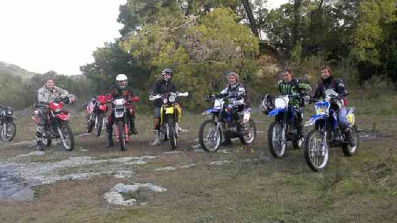

<article>
	<h1>GALERIA DE IMAGENES</h1>
	<section class="galeria">
		<div class="page-header cabecera-seccion">
			<h2>Imagenes en la Ciudad de Tandil</h2>
		</div>
		
		
		
		
	</section>
</article>
<!--//// JS DEL POSICIONAMIENTO DEL FOOTER ////-->
	<script type="text/javascript" src="js/footer.js"></script>